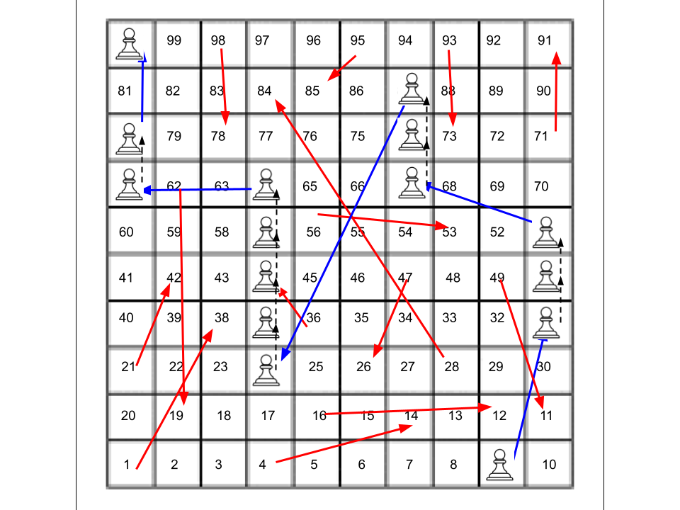
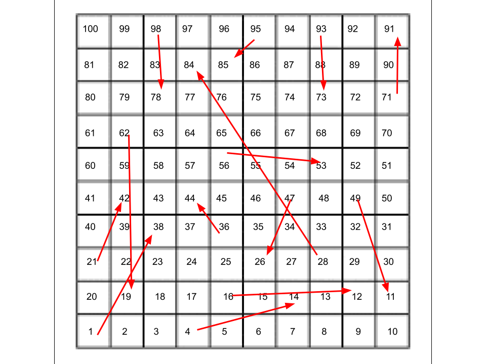
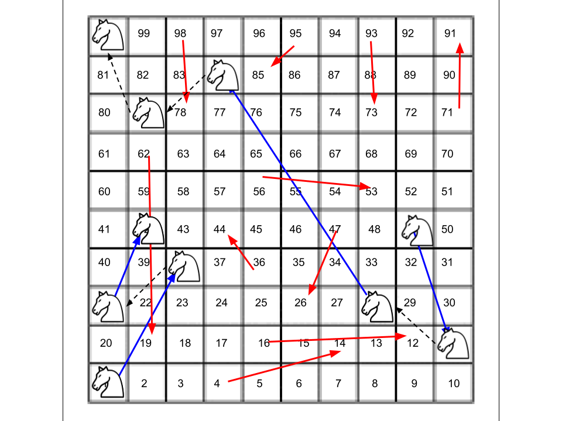
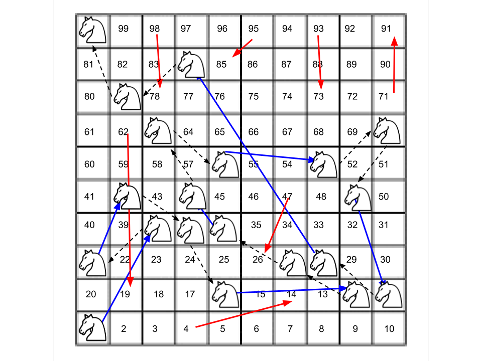
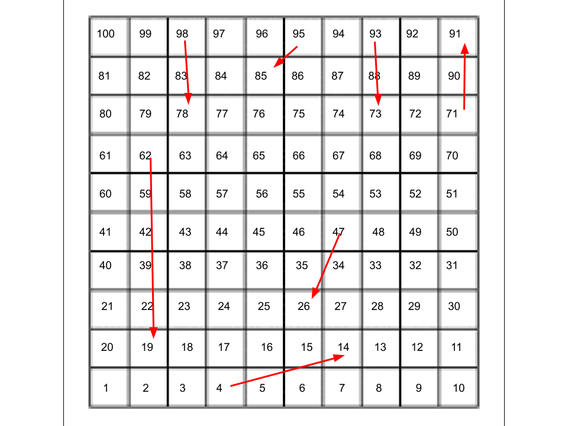
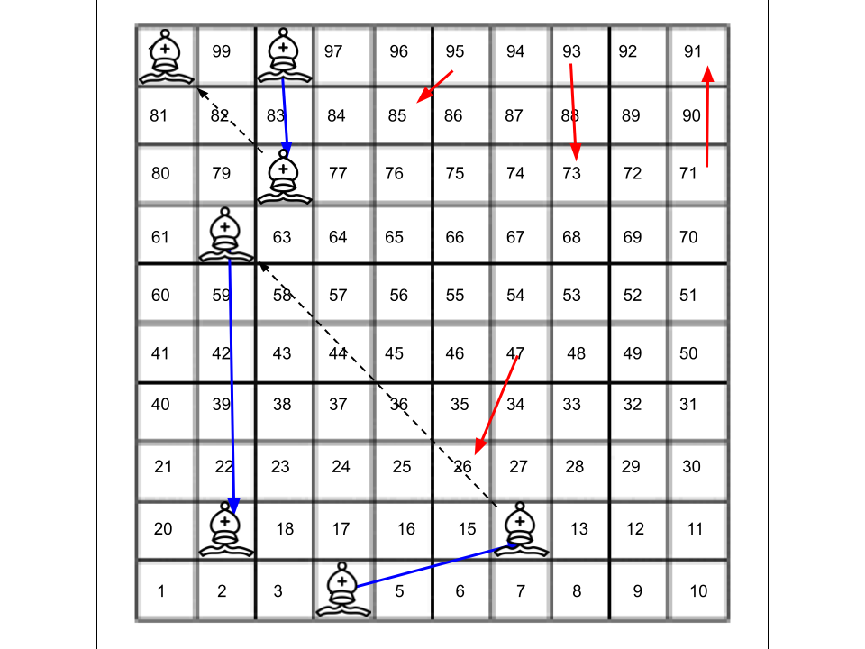
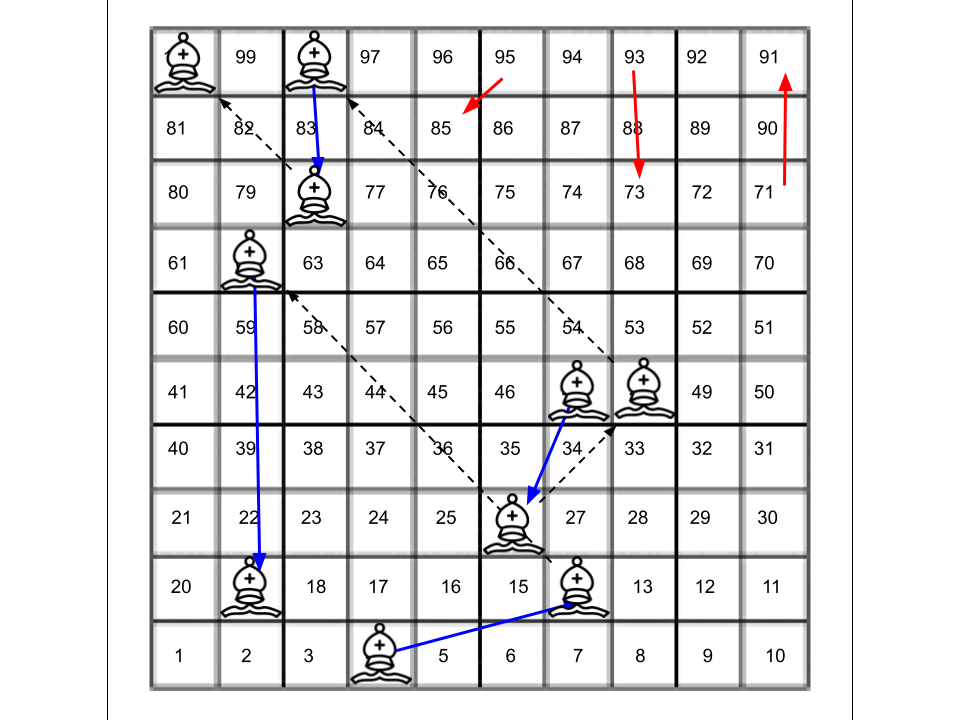
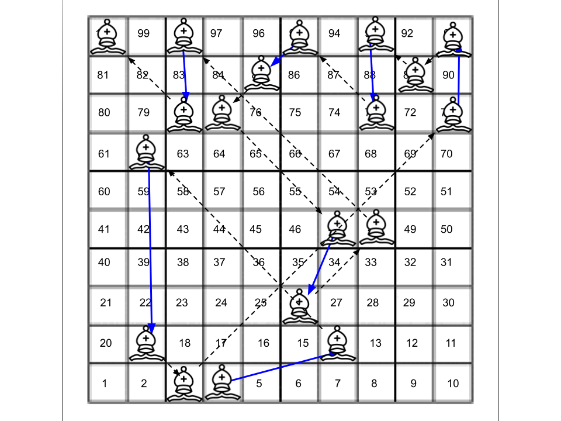

In this explanation, I will use the term "arrow" to refer to either a chute or a ladder.
The easiest piece to start with is the pawn, and it's easiest to work backwards because it can only move one step straight ahead each turn. It can be reconstructed in the following way:
Here is the pawn's path on the board:
Here is the updated table:
| Move # | Pawn | Knight | Bishop | Aphorisms |
|---|---|---|---|---|
| 1 | 9-31! | Enter! | Enter! | REUSE YOUR TABLESPOONS AS TEASPOONS FOR EVEN BIGGER TEACUPS |
| 2 | 50 | Move! | Move! | OVERTHROWING YOUR OWN GOVERNMENT MEANS YOU NOW CREATE ONE |
| 3 | 51-67! | 37 | Move | A SNAKE IN THE BABY'S NURSERY IS NEVER STARVING |
| 4 | 74 | Move! | Move! | SNACK FOOD AT FIVE WILL SPOIL DINNER AT SIX. |
| 5 | 87-24! | Move | Move | YOUR ASCENT COULD BE WORSE. IT COULD BE SNOWING. |
| 6 | 37 | Move! | Move! | DON'T SAY "OK BOOMER", SAY "OF CORPSE" TO THEM |
| 7 | 44 | 63 | Move! | DATING A TEACHER LEADS TO SOME VERY CHALKY LAUNDRY |
| 8 | 57 | Move! | 77 | IF YOU ARE IN STALEMATE, INTRODUCE SOME NEW PIECES |
| 9 | 64-61! | 70 | Move! | OLD CAMCORDERS MAY WORK, BUT NEVER WIN CINEMATOGRAPHY OSCARS |
| 10 | 80-100! | Move! | Move | AVOID PLAYING CHESS WITH PIGEONS. THEY WILL POOP EVERYWHERE. |
| 11 | Move! | Move! | SOLID HORSESHOES MAKE A THUD, HOLLOW HORSESHOES ECHO LOUDLY | |
| 12 | Move | Move | ALL OF THESE PHRASES ARE SUSPICIOUSLY NINE WORDS LONG. | |
| 13 | Move | WALKING BACKWARDS CAN HELP YOU GET TO YOUR DESTINATION |
We can then remove the arrows that the pawn used to see what is left.
Next, take a look at the start of the knight path. It must enter, travel on an arrow, then immediately move again and travel on another arrow, then move to space 37. If the knight enters on the 1, it travels to 38, and then can move to 19, 21, 41, 59, 57, 45, 25, or 17. Of those, 21 is the beginning of an arrow. If the knight enters on 4, it travels to 14, and then can move to 5, 25, 35, 33, 29, or 9. None of those spaces are the beginning of an arrow. This means that the first two moves must be 1-38 and then 21-42. This is confirmed by the fact that the next move of 37 is legal from 42.
Let's also look at the back of the knight path. The last move must be to 100 and the knight must come from an arrow that is two moves away. The only remaining arrow that can do this is the 28-84 arrow. The move to 28 must also come from the end of an arrow, which means that it must come from the 49-11 arrow. This is confirmed by the fact that we know move 9 lands the knight on space 70, and the knight can move from 70 to 49.
Let's now take a look at the knight's moves so far:
Move 8 is fairly straightforward. The knight has to go from 63 to 70 using an arrow, and the only arrow that does this is the 56-53 one. This means that the 56-53 arrow will not be available to the knight on move 4, so the only other arrow that the knight can move onto is 16-12. Move 6 is also an arrow, and the only arrowhead that can reach 63 is 44. Move 5 connects the 16-12 arrow to the 36-44 arrow, which means that the knight needs to move to 27. This gives the following path:
Here is the updated table:
| Move # | Pawn | Knight | Bishop | Aphorisms |
|---|---|---|---|---|
| 1 | 9-31! | 1-38! | Enter! | REUSE YOUR TABLESPOONS AS TEASPOONS FOR EVEN BIGGER TEACUPS |
| 2 | 50 | 21-42! | Move! | OVERTHROWING YOUR OWN GOVERNMENT MEANS YOU NOW CREATE ONE |
| 3 | 51-67! | 37 | Move | A SNAKE IN THE BABY'S NURSERY IS NEVER STARVING |
| 4 | 74 | 16-12! | Move! | SNACK FOOD AT FIVE WILL SPOIL DINNER AT SIX. |
| 5 | 87-24! | 27 | Move | YOUR ASCENT COULD BE WORSE. IT COULD BE SNOWING. |
| 6 | 37 | 36-44! | Move! | DON'T SAY "OK BOOMER", SAY "OF CORPSE" TO THEM |
| 7 | 44 | 63 | Move! | DATING A TEACHER LEADS TO SOME VERY CHALKY LAUNDRY |
| 8 | 57 | 56-53! | Move | IF YOU ARE IN STALEMATE, INTRODUCE SOME NEW PIECES |
| 9 | 64-61! | 70 | Move! | OLD CAMCORDERS MAY WORK, BUT NEVER WIN CINEMATOGRAPHY OSCARS |
| 10 | 80-100! | 49-11! | Move | AVOID PLAYING CHESS WITH PIGEONS. THEY WILL POOP EVERYWHERE. |
| 11 | 28-84! | Move! | SOLID HORSESHOES MAKE A THUD, HOLLOW HORSESHOES ECHO LOUDLY | |
| 12 | 79 | Move | ALL OF THESE PHRASES ARE SUSPICIOUSLY NINE WORDS LONG. | |
| 13 | 100 | WALKING BACKWARDS CAN HELP YOU GET TO YOUR DESTINATION |
Now, remove the arrows that the knight used to see what the bishop has to use.
The first two moves are pretty easily forced. The bishop is forced to enter on the 4-14 arrow since it is the only one left on the first row, and from there the only arrow it can travel to in one move is 62-19. In addition, the last two moves are forced. It must travel to 100 from the end of an arrow, and the only arrow that can work for that is the 98-78 arrow. This can give us a partial board that looks like this:
One important observation at this point is that the even/odd numbers form a checkerboard, which means that the only way that the bishop can travel from an even number to an odd number or vice versa is by an arrow. The forward part of the path is on an odd number, while the reverse part of the path is on an even number. Of the four arrows we have left, only one takes an odd number to an even number. This means that going forwards, we must use all three odd-odd arrows before using the odd-even, then connect with the reverse path. We can therefore fill out a little more of the board.
The remaining moves to stitch the two halves together are:
The only way we can move from the end of one arrow to the front of another arrow is by going from 93-73 to 95-85. This forces the other Move! to be 71-91, and the remaining moves are needed to stitch the moves together. The 77 move at the end serves as a confirmer (and helps with the backwards logic if solvers are stuck).
Here is the updated table:
| Move # | Pawn | Knight | Bishop | Aphorisms |
|---|---|---|---|---|
| 1 | 9-31! | 1-38! | 4-14! | REUSE YOUR TABLESPOONS AS TEASPOONS FOR EVEN BIGGER TEACUPS |
| 2 | 50 | 21-42! | 62-19! | OVERTHROWING YOUR OWN GOVERNMENT MEANS YOU NOW CREATE ONE |
| 3 | 51-67! | 37 | 3 | A SNAKE IN THE BABY'S NURSERY IS NEVER STARVING |
| 4 | 74 | 16-12! | 71-91! | SNACK FOOD AT FIVE WILL SPOIL DINNER AT SIX. |
| 5 | 87-24! | 27 | 89 | YOUR ASCENT COULD BE WORSE. IT COULD BE SNOWING. |
| 6 | 37 | 36-44! | 93-73! | DON'T SAY "OK BOOMER", SAY "OF CORPSE" TO THEM |
| 7 | 44 | 63 | 95-85! | DATING A TEACHER LEADS TO SOME VERY CHALKY LAUNDRY |
| 8 | 57 | 56-53! | 77 | IF YOU ARE IN STALEMATE, INTRODUCE SOME NEW PIECES |
| 9 | 64-61! | 70 | 45-26! | OLD CAMCORDERS MAY WORK, BUT NEVER WIN CINEMATOGRAPHY OSCARS |
| 10 | 80-100! | 49-11! | 48/80* | AVOID PLAYING CHESS WITH PIGEONS. THEY WILL POOP EVERYWHERE. |
| 11 | 28-84! | 98-78! | SOLID HORSESHOES MAKE A THUD, HOLLOW HORSESHOES ECHO LOUDLY | |
| 12 | 79 | 100 | ALL OF THESE PHRASES ARE SUSPICIOUSLY NINE WORDS LONG. | |
| 13 | 100 | WALKING BACKWARDS CAN HELP YOU GET TO YOUR DESTINATION |
The starred move is not unique, but either option will work for the puzzle.
At this point, we need to address the aphorisms. The players are told to mark something on the ground in front of them whenever they use an arrow. Each arrow ends on a 2-digit number and each aphorism is exactly 9 words long. Treat the 2 digit number as a way to indicate word/character, get the appropriate letter from the aphorism and write it on the board in the indicated square. Reading the board in number order gives the string ANSWER TOO MANY ROOKS!
| Move # | Pawn | Knight | Bishop | Aphorisms |
|---|---|---|---|---|
| 1 | 9-31! - T | 1-38! - O | 4-14! - S | REUSE YOUR TABLESPOONS AS TEASPOONS FOR EVEN BIGGER TEACUPS |
| 2 | 50 | 21-42! - O | 62-19! - W | OVERTHROWING YOUR OWN GOVERNMENT MEANS YOU NOW CREATE ONE |
| 3 | 51-67! - Y | 37 | 3 | A SNAKE IN THE BABY'S NURSERY IS NEVER STARVING |
| 4 | 74 | 16-12! - N | 71-91! - S | SNACK FOOD AT FIVE WILL SPOIL DINNER AT SIX. |
| 5 | 87-24! - E | 27 | 89 | YOUR ASCENT COULD BE WORSE. IT COULD BE SNOWING. |
| 6 | 37 | 36-44! - M | 93-73! - R | DON'T SAY "OK BOOMER", SAY "OF CORPSE" TO THEM |
| 7 | 44 | 63 | 95-85! - K | DATING A TEACHER LEADS TO SOME VERY CHALKY LAUNDRY |
| 8 | 57 | 56-53! - A | 77 | IF YOU ARE IN STALEMATE, INTRODUCE SOME NEW PIECES |
| 9 | 64-61! - N | 70 | 45-26! - R | OLD CAMCORDERS MAY WORK, BUT NEVER WIN CINEMATOGRAPHY OSCARS |
| 10 | 80-100! - ! | 49-11! - A | 48/80* | AVOID PLAYING CHESS WITH PIGEONS. THEY WILL POOP EVERYWHERE. |
| 11 | 28-84! - O | 98-78! - O | SOLID HORSESHOES MAKE A THUD, HOLLOW HORSESHOES ECHO LOUDLY | |
| 12 | 79 | 100 | ALL OF THESE PHRASES ARE SUSPICIOUSLY NINE WORDS LONG. | |
| 13 | 100 | WALKING BACKWARDS CAN HELP YOU GET TO YOUR DESTINATION |